러닝 정보
-
탄수화물 부족한 채 달리면, 뼈를 잃는다.
운동 후 회복을 돕는 가장 중요한 영양소는 탄수화물이다. 탄수화물은 달리기에 사용되는 가장 중요한 에너지원인 근육 세포 내의 글리코겐의 원료이다. 달린 후 탄수화물을 섭취하는 것은 근육에 저장된 글리코겐을 다시 비축하는데 꼭 필요하다
구로뉴스 450+ -
러너에게 음식은 연료다.
좋은 차에는 좋은 기름을 넣어줘야 하는 것처럼, 귀중한 나의 몸에도 고성능의 고급 연료를 넣어줘야 하지 않을까? 그렇다면 좋은 연료란 뭘까?
인천주안일보 100+ -
'야외 달리기' 균형 잡힌 근육 성장, 부상 조심해야
반면 야외 달리기의 장점은 시시각각 변하는 풍경을 즐기며 운동할 수 있다는 것이다. 또 다양한 지형에서 달릴 수 있어 다리와 발 근육을 더 다양하게 사용한다. 이는 근력과 순발력 발달을 도와 운동 효과를 더 높여준다
MBC뉴스 300+ -
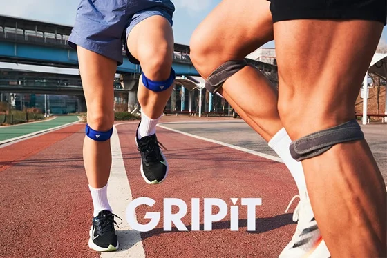
잘못 사용하면 오히려 독? ‘무릎보호대’ 올바르게 사용하는 법
특히 지지대가 있는 무릎보호대는 보조기의 무게가 무거워 걸을 때 쉽게 흘러내릴 수 있는데요. 이렇게 되면 보호대와 무릎의 접촉 위치가 벗어나게 되고, 원래 의도한 무릎에 가해져야 하는 힘의 방향이 틀어지면서 오히려 통증을 악화시킬 수 있습니다.
주안구로일보 150+
-
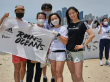
서울시 운영 ‘MZ세대 러닝크루’…“광화문서 달리면 시민 모두 친구”
코로나19 엔데믹(감염병의 풍토병화) 이후 야외활동이 활발해진 요즘, 엠제트(MZ)세대를 중심으로 러닝크루(달리기 동호회) 모임이 새로운 생활체육 문화로 자리 잡고 있다. 이에 맞춰 서울시에서도 시민 누구나
서울연합뉴스 300+ -
‘런라니’가 되지 말자… ‘민폐’ 막을 자정 노력
젊은이들의 러닝크루 활동이 늘어나면서 일각에서는 곱지 않은 시선도 있다. 여러 사람이 단체로 달리다 보니 주변 시민이나 행인들 입장에서는 불편함을 느끼는 상황이 종종 생긴다. 단체로 뛰면서 자전거 도로나 보도
kbs일보 250+ -
광화문광장·반포공원 함께 달려요…'7979 서울 러닝크루'
지난달 13일부터 매주 목요일 오후 7시부터 2시간 동안 광화문광장 육조마당과 반포시민한강공원 달빛광장에서는 달리기를 즐기는 시민들을 쉽게 목격할 수 있다. 서울시민 누구나 참여 가능한 '
구로주안일보 100+ -
러닝인구 천만…건강하게 달리고 싶다면? 푸마 러닝화, 美 족부의학협회 기능성 인증 취득
APMA로부터 'CUSH + RIGID MIDFOOT & EXTREME ROCKER' 마크를 받은 '매그맥스 나이트로'는 신형 나이트로 폼(NITRO FOAM™)을 적용, 발 건강에 최적화된 부드러운 쿠셔닝과 단단한 지지력의 조화를 통해 러닝 시 자연스러운 발의 움직임을 돕는다.
MBC뉴스 400+


 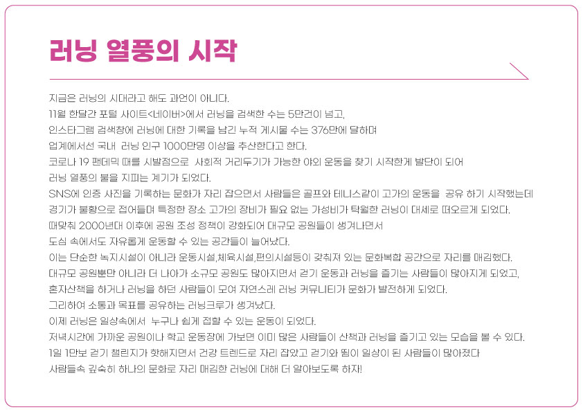
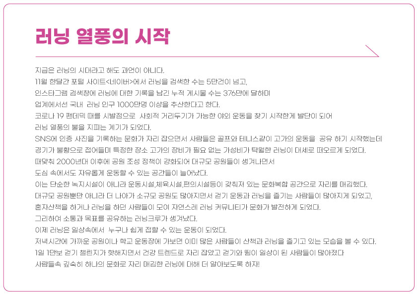

 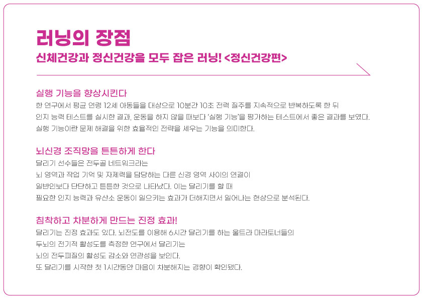
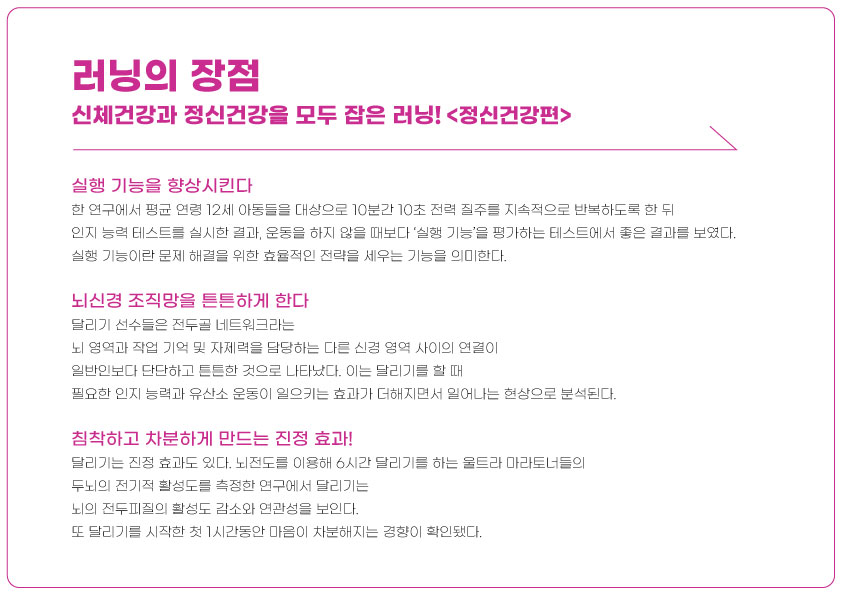


 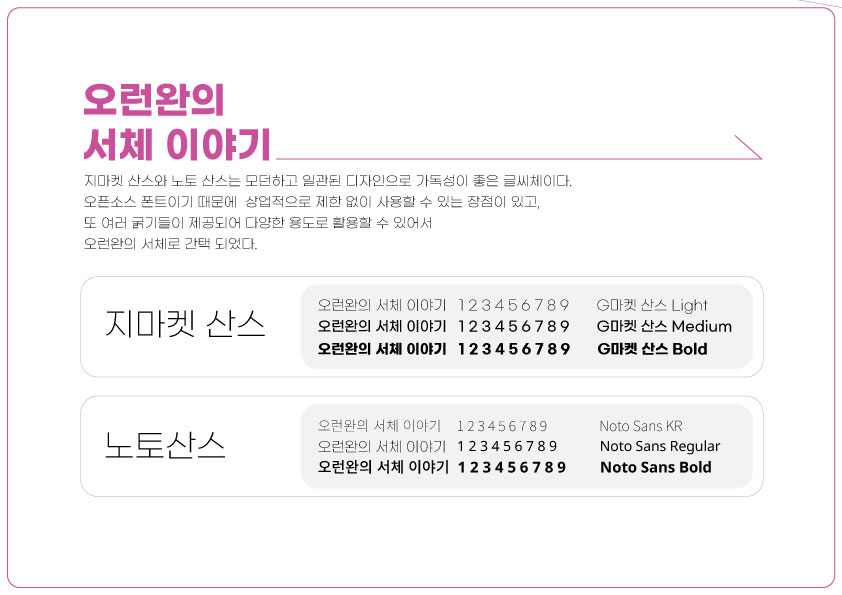
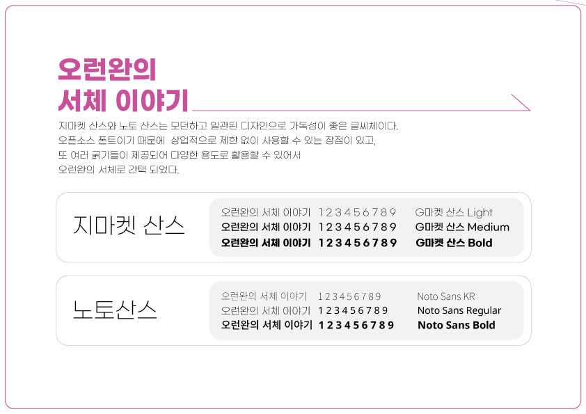
 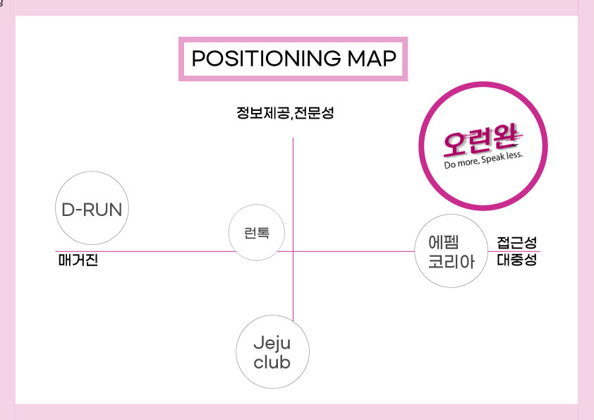
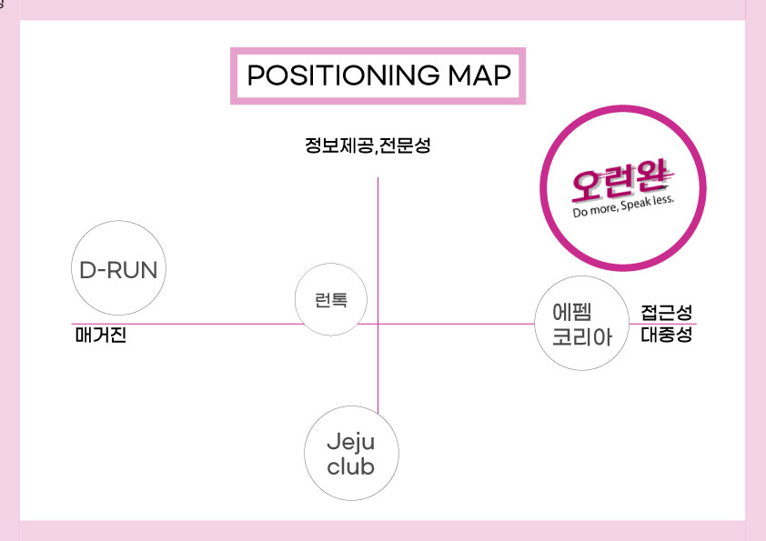
 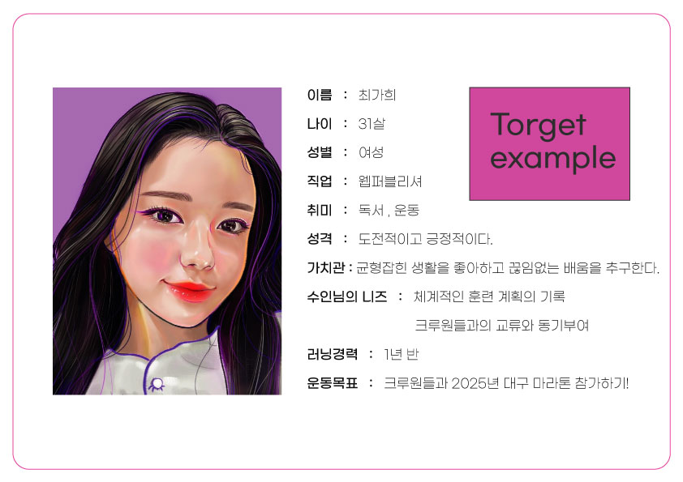
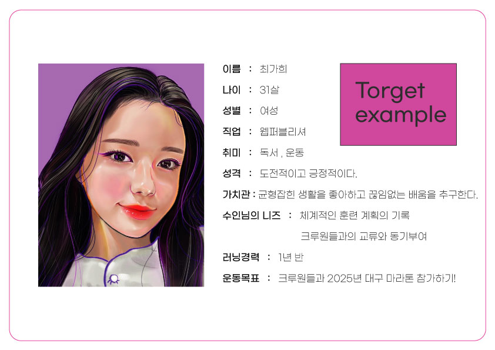

 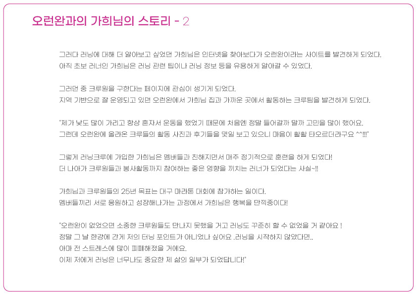
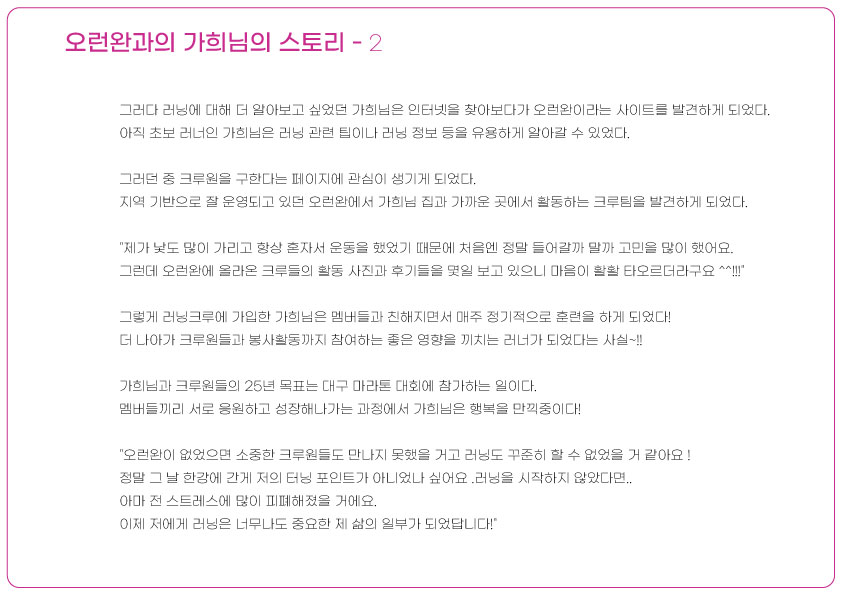


 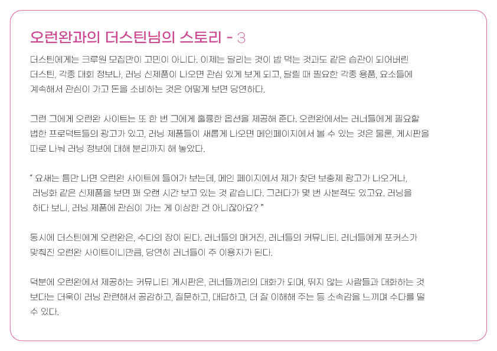
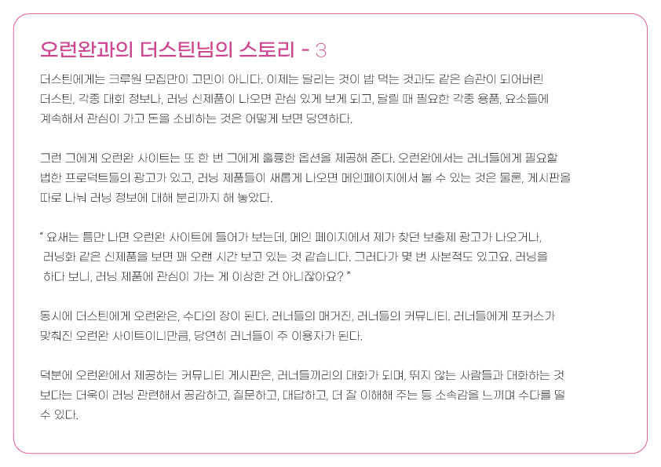
 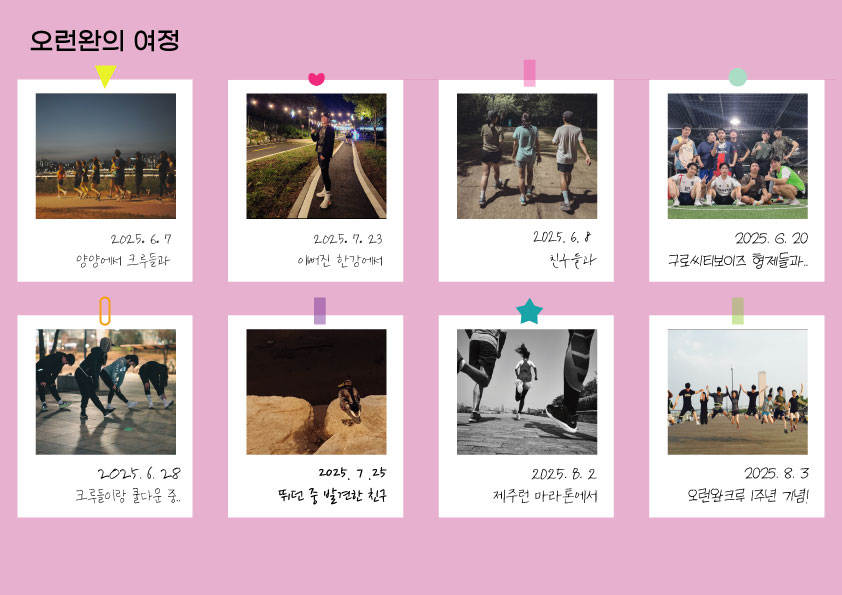
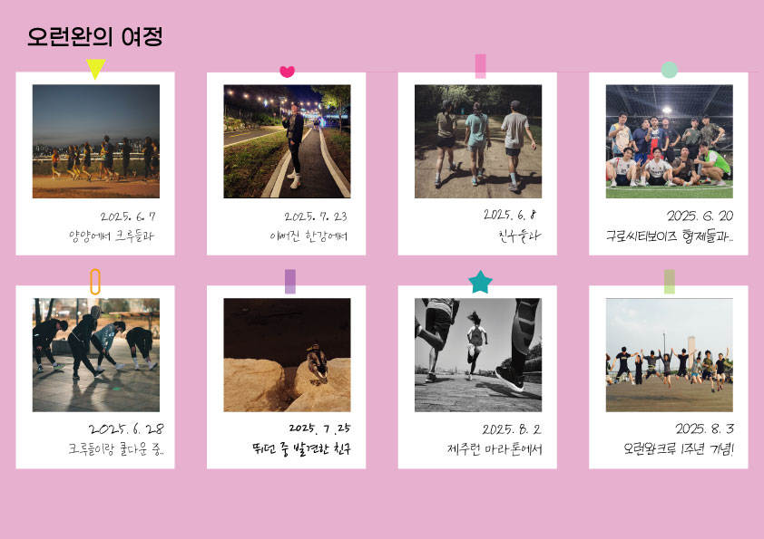